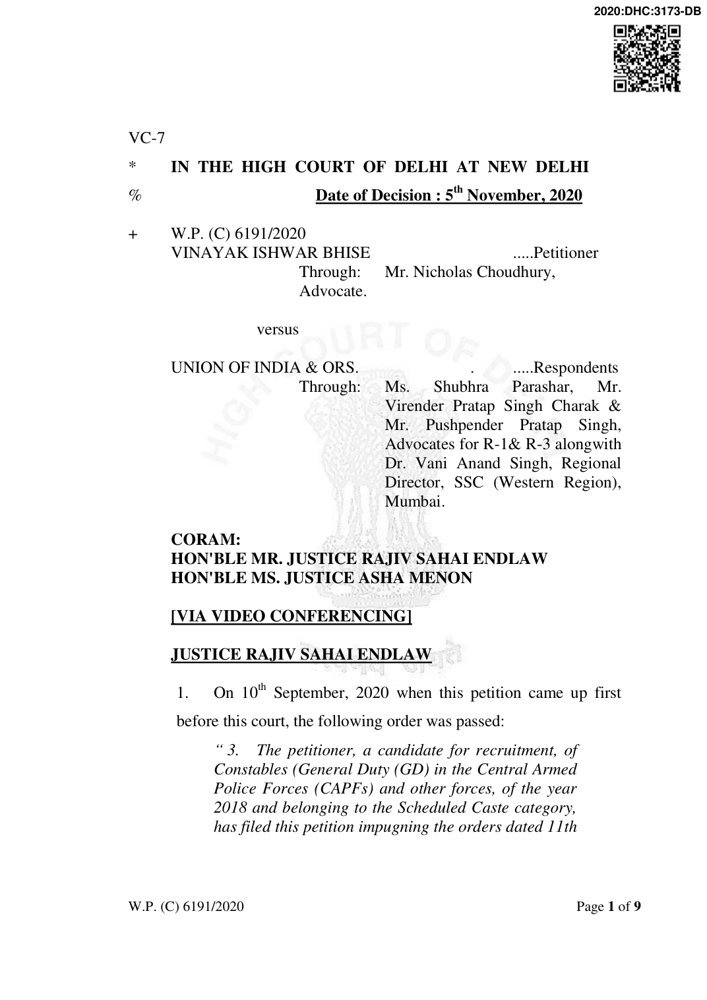
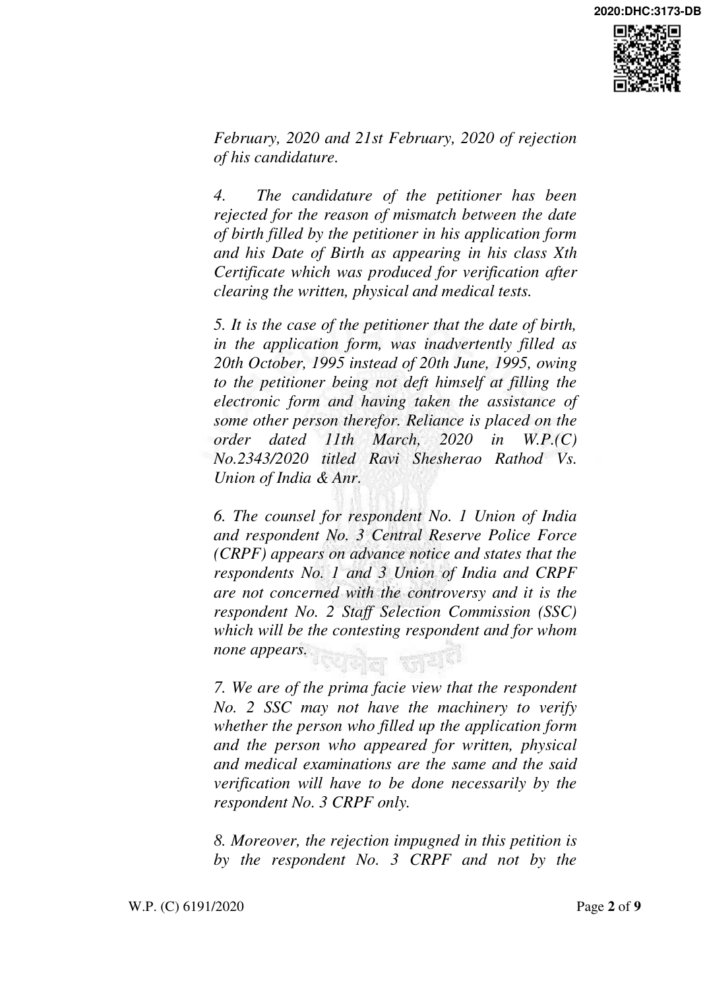
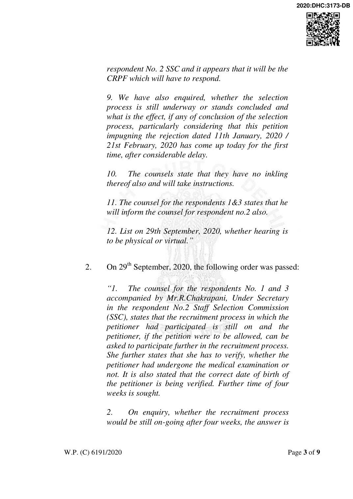
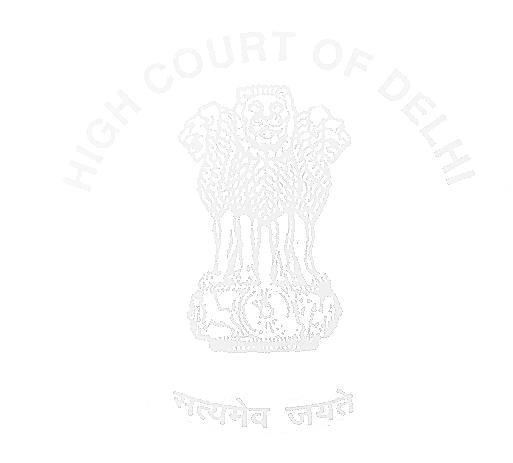

in the affirmative and it is stated that the petitioner would even then be entitled to join.
- The counsel for the petitioner to also furnish, today itself, the correct copy of the petition to the counsel for the respondents.
- List on 5th November, 2020.”

- The counsel for the respondents alongwith Dr. Vani Anand Singh, Regional Director, SSC (Western Region), Mumbai of the respondent No. 2 Staff Selection Commission (SSC) appears and states that on verification, the 10th Class certificate produced by the petitioner has not been found to be forged or fabricated. Dr. Vani Anand Singh, Regional Director, SSC however states that there are a large number of such cases/representations received, where the candidates say that there was an error in filling up the application form. It is stated that over 51 lakhs candidates appeared in the subject examination and if the respondents start entertaining such requests, the entire process of recruitment will be delayed. It is stated that since the rules of the examination provide that in case of any discrepancy between the particulars filled in the application form and the documents produced at the time of verification, the candidature of the candidate concerned shall be cancelled, the said rule should be permitted to be abided by in larger public interest of expediency in recruitment. It is further stated that some cases of fraud/conspiracy to secure employment in this fashion have also been detected. It is yet
W.P. (C) 6191/2020
further stated by Dr. Vani Anand Singh, Regional Director, SSC that since the respondents are faced with a large number of such representations, giving benefit to one who approaches the Court, would do injustice to others who are similarly placed but have not approached the court.
- We have considered the stand of the respondents and though

appreciate the same, cannot be unmindful of the hard realities of the citizens of this country, where computerization has not reached a large section of population, and particularly those who apply for recruitment as Constables (General Duty) in Central Armed Police Forces and other forces. In the absence of computer literacy, the said section of the population, when faced with the requirement of filling up an online application form for securing a job, has to necessarily depend upon others. On enquiry, Dr. Vani Anand Singh, Regional Director, SSC informs us that the application forms were required to be filled in English language. We also cannot but help taking judicial notice of the fact that there is also wide spread illiteracy, as far as English language is concerned, even amongst those who have passed their 10th Class examination, which for the subject examination was the minimum qualification for applying. In the circumstances, the said section of the population has to depend entirely on others to correctly fill up the online application form as per their instructions and which often results in mistakes.
- Though the respondents would certainly be justified, where
W.P. (C) 6191/2020
sniff any foul play, to not entertain the representations with respect to a discrepancy but where after verification, as has been reported before us today, it is stated that there is no foul play in the discrepancy in the application of the petitioner, in our view, to take a harsh stand, that the petitioner, owing to the technical rules of the examination is deprived of joining public employment,

would be inhuman and arbitrary. Reference in this regard may be made to judgment dated 11th March, 2020 in W.P.(C) 2343/2020 in Ravi Shesherao Rathod Vs. Union of India where a bench comprising of one of us (Justice Rajiv Sahai Endlaw), on a conspectus of judgments of this Court, held the petitioner claiming relief on the basis of having wrongly entered his date of birth at the time of filling his application form, entitled to such relief.
- As far as the other statement of Dr. Vani Anand Singh, Regional Director, SSC that only those who approach the Court would benefit, is concerned, we leave it to the discretion of the respondents, to take a call thereon and it is not in our domain to adjudge the said aspect. We are in this petition only concerned with the case of the petitioner and in which case, to eliminate the possibility of any foul play, we had on the very first date asked the respondents to verify.
- We may mention that the counsel for the respondents has today, also emailed to us the counter affidavit to the petition and in which it is pleaded (i) that the facility of submission of online applications for the subject examination was started only on 25th
W.P. (C) 6191/2020
July, 2018; (ii) however due to technical reasons, receipt of online applications was suspended from 28th July, 2018 to 17th August, 2018 and continued till 30th September, 2018; (iii) the recruitment process comprised of computer based examination in English and Hindi languages, Physical Efficiency Test/Physical Standard Test, detailed Medical Examination and verification of documents; (iv)

that the petitioner was declared fit in the medical examination and his candidature was rejected only for the mismatch in his date of birth between what was filled in the online application form and what was contained in his documents; (v) that the applicants, in the application forms had agreed to cancellation of their candidature for such mismatch; (vi) that the High Courts of Punjab and Haryana and Allahabad, in the past, have dismissed such petitions; (vii) that when the entire examination process working computerized, any manual intervention would place the SSC in extreme administrative difficulties because of the sheer number of candidates who apply for the examination and who qualify at subsequent stages of examination; (viii) manual modification of the information /data furnished by the candidates in their online applications is not practically feasible; and, (ix) while the date of birth filled by the petitioner in his online application was 20th October, 1995, his date of birth as per his documents is 20th June, 1995.
- The respondents in the counter affidavit aforesaid have admitted to having introduced online application forms only with
W.P. (C) 6191/2020
effect from the year 2018 and to have itself, in spite of all the resources at its command, having faced technical glitches in accepting online applications forms. In the light thereof, the respondents ought to be a little more appreciative of the similar difficulties faced by the citizens with literally no resources at their command and who are in a sense consumers of the services being

rendered by the respondent SSC. Not only so , when the computer based examination was to be held in both Hindi and English language, consideration should also have been given for the non- English knowing candidates having been required to fill up the application in English language only. We also implore the respondent SSC to consider that computerization and use of Artificial Intelligence is to expedite and simplify processes and to make life easy and not to make life more difficult. We are unable to appreciate why, the changes in date of birth in the online application, cannot be easily made when the mistake is found to be bona-fide. It is time, computer processes are seen as a friend rather than feared as a foe.
- The petition thus succeeds and the rejection of the candidature of the petitioner vide communications dated 11th January, 2020 and 21st February, 2020, is quashed.
- The orders set out hereinabove already record that the recruitment process is still on and the petitioner, if succeeds in this petition, will be able to be entitled to rejoin the recruitment process.
W.P. (C) 6191/2020
- We thus also direct the respondents to now consider the recruitment of the petitioner in accordance with law and the relevant rules.
- The petition is disposed of.

RAJIV SAHAI ENDLAW (JUDGE)
ASHA MENON (JUDGE)
NOVEMBER 05, 2020
ck
W.P. (C) 6191/2020